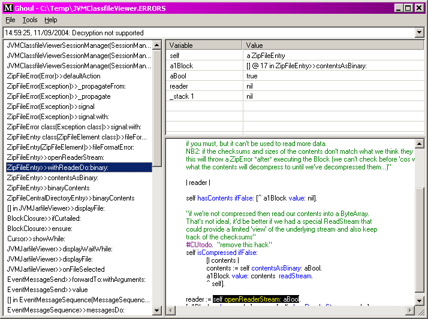

|
Ghoul for Dolphin Smalltalk |
|||||||||||||||
|
Ghoul |
Ghoul is a small tool for displaying a debugger-like view of Dolphin crash-dump files. These files are created when Dolphin crashes (if that is enabled) or when deployed .EXEs encounter an uncaught exception. They can also be created programmatically. Ghoul works by parsing out the “Stack Back Trace” section of a crashdump, and then using that information to cross-link to the current definitions of the methods in your working image. The name “Ghoul”, of course, is because it digests the remains of dead programs… This version of Ghoul is known not to work with the recently released Dolphin 6. Ghoul installs itself in the 'Extra Tools' system folder and menu; you can launch it from there and then use the File menu to open a crash dump file. Since such files can contain several stack traces, a drop-list at the top of the window allows you to select which you want to look at. By default Ghoul will display the most recent trace. At this point, a picture is probably worth a thousand words…  The rest of the window is similar to the normal Dolphin debugger (but of course, everything is read-only), the list at the left shows the active method calls at the time the crashdump was made. Selecting from that list will show the values of the method parameters and local variables at that time (sadly, you can't see the values of instance variables). The other pane shows the current source for the selected method, and highlights the expression that was executing at that moment. One thing to be careful of: if the method's definition has changed since the dump was made, then Ghoul can get confused about matching up the data in the dump file with that in your image. This will only affect the methods that have changed, not the entire stack trace. If the method is not present in your image then Ghoul will fall back to showing a warning message in the source pane and using generic names for the variables. If you have STS installed (David Gorisek's source-code control product), then Ghoul will attempt to check that the method's definition is at least as old as the data in the dump file. If it finds a mismatch, then the method will be displayed “greyed out”. Please don't rely on this overmuch; it is perfectly possible that you modified the method after deploying the application, but before the dump file was written. As you'll see, Ghoul is really not doing anything very clever — it just provides a somewhat friendlier view of the contents of a crash dump file, without doing any (or needing to do) any elaborate processing. Crash dump files can be created programmatically using: which will write a crashdump file to the place indicated by the Dolphin crash dump registry entry. For Dolphin 5.0 and 5.1 this is: which should be set to the name of the target file. Alternatively you can use:
which will write a similar file to aFilename. If aFilename is nil, then it creates a file
called Ghoul has a couple of obscure options that control how it parses dump files, these are necessary because of some problem with the Dolphin dump code which can produce inconsistent output. (I don't like either of these hacks, and would prefer not to have mentioned them at all, but they might be confusing so I thought it better to explain.) The IP (instruction pointer) numbers in the stack trace can be in either hex or decimal; normally Ghoul can guess which depending on what kind of dump file it is, but apparently this isn't reliable, and in fact the hex/decimal choice can change within one stack trace. Therefore I've added a menu option to toggle between hex and decimal parsing. You can use it if the highlighted code, or the interpretation of the local variables, doesn't seem to be making sense. Similarly Ghoul can only make a guess at how to parse the date embedded in the trace, normally it assumes the date format from your current locale, but if you are reading dump files created elsewhere or on a Win2K box (which seem to ignore the locale for dumps) then you can force the format it expects. The setting is image-wide and can be found under 'GhoulShell' in the normal Dolphin options, or via Ghoul's own 'Options' menu. Packages
|
Copyright © Chris Uppal, 2003-2005